01
DESARROLLO MÓVIL
Field Scanner
Crea una app en React Native, escanea códigos QR y distingue dispositivos auténticos de señuelos de ULTRON.
DESBLOQUEAPROTOCOLO FINAL

Un hackathon inmersivo para estudiantes de preparatoria de Sonora. Construye un asistente de IA, supera cuatro estaciones tecnológicas y reúne las pistas necesarias para detener a ULTRON.
LA AMENAZA
Los equipos deberán construir a JARVIS y después usarlo como copiloto para resolver cuatro desafíos. Cada estación revela una pieza del protocolo final.
Cuatro áreas. Cuatro pistas. Una sola misión.
Crea una app en React Native, escanea códigos QR y distingue dispositivos auténticos de señuelos de ULTRON.
Analiza el sistema térmico y encuentra el punto crítico que reduce la capacidad computacional de ULTRON.
Investiga registros, detecta trampas y recupera la credencial auténtica dentro de un entorno controlado.
Sigue el tráfico, comprende la topología y localiza el núcleo desde donde ULTRON coordina la operación.
La experiencia está diseñada para aprender, colaborar y resolver bajo presión.
Todos los participantes se reúnen en el Salón de Congresos para construir una primera versión funcional de JARVIS con ayuda de cuatro profesores.
Los equipos recorren Desarrollo móvil, Algoritmos, Ciberseguridad y Redes para recuperar las cuatro piezas de información.
Las pistas se integran en JARVIS. Los equipos deberán ejecutar el protocolo correcto para neutralizar a ULTRON y recuperar el control del agua.
No necesitas dominar todas las áreas. La misión está diseñada para aprender, colaborar y construir soluciones en equipo.
El cupo será limitado. Registra tu interés para recibir la convocatoria, fecha, sede y requisitos del evento.
PRERREGISTRARME → Enindex.html, sustituye el href="#" del botón por el enlace real de tu formulario.
> INIT JARVIS_PROTOCOL
> SEARCHING_FOR_CANDIDATES...
> SONORA_NETWORK: ONLINE
> PARTICIPANTS_TARGET: 100
> STATIONS_AVAILABLE: 4
> THREAT_LEVEL: ULTRON
> STATUS: RECRUITING
>